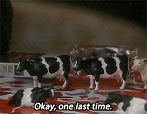
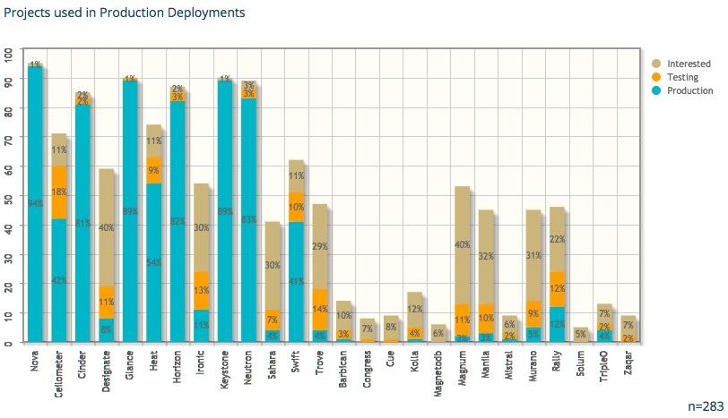
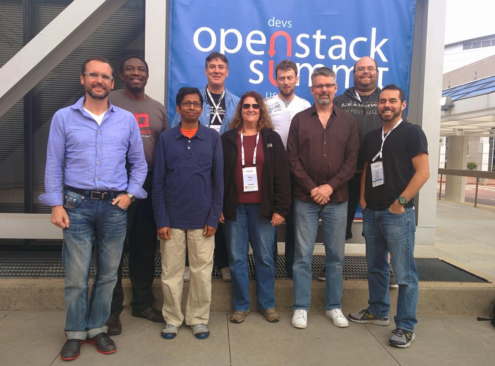
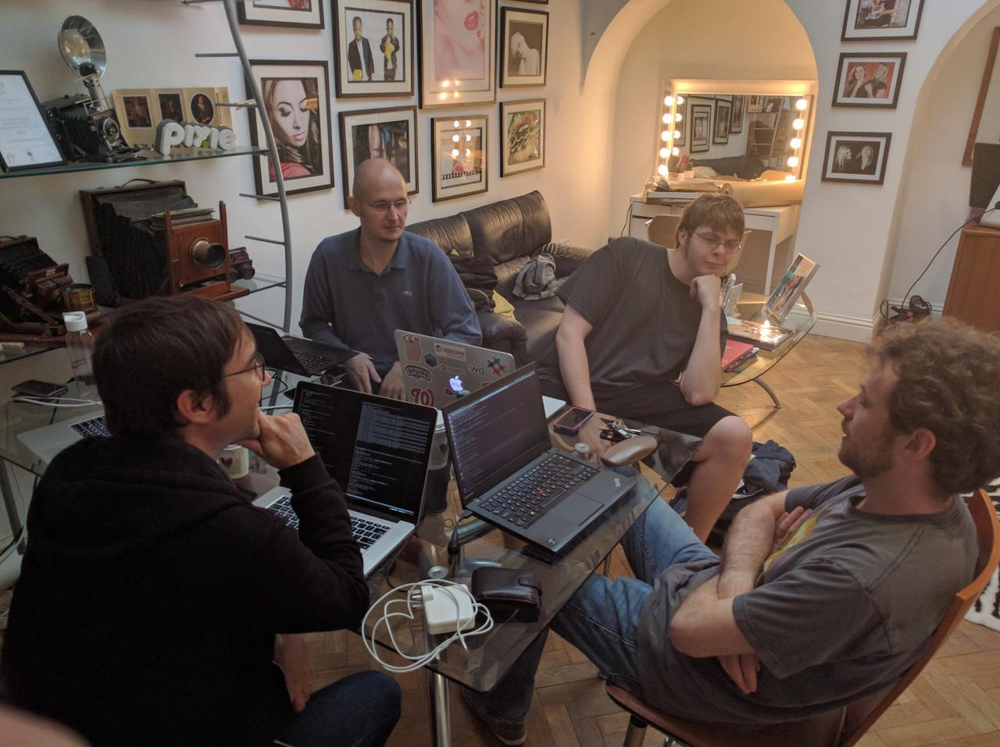

OpenStack TC Nominations - Victoria
Hello Everyone,
I have been a member of the TC for 2 terms now, and I am running again for another term on the TC.
I have been involved in OpenStack as a developer, operator, PTL, and TC member for a long time, and I think that I can continue to contribute to the community on the TC.
I worked as the technical lead for the System Operations team in Verizon Cloud Platform, where we ran 90+ OpenStack installs across the world, ranging from 3 compute micro regions where we needed edge style compute, to much larger footprints for core regions in the US. This gave me a unique viewpoint on how people use OpenStack for both small scale, and for large, real time mission critical telecommunications applications.
Further back in my career, I was part of a team that ran the DNSaaS service in HP Cloud (based on Designate of course), which combined with my current role in Azure, where I am looking at how people use both on prem and external clouds, gives me a good insight into the needs of a cloud provider.
My main focus over the last term has been trying to get a co-ordinated way for organizations to contribute to OpenStack - Graham's soap box at the Board face to face meetings has become a regular event. Thankfully, I think this has helped push this forward, and I know I have seen people getting involved in the projects I keep an eye on.
I have also been involved in the design discussions around Project Teapot which I think is a great way for OpenStack to help people scale and manage their data centers, while providing the services modern applications are starting to use. I firmly believe that something like Teapot is an important focus of development for OpenStack.
I think the new ideas repo is a fantastic idea and encourage people to put what ever they think is a good idea for OpenStack in there. I will definitely be putting up some of the ideas I have talked about over the years in there.
As a long time PTL of a project I know the pressures they can be under and can provide insight as we consider the future governance of the OpenStack project, and its sub projects.
This has given me a lot of historical knowledge and context to why some things within our community are the way they are, and as we record this to avoid needing something as unreliable as a human brain (rst is a lot better :) ) I feel I can contribute to the discussion.
Finally, I feel that over the years I have made it clear that I will speak out even if I know it will cause push back, and this has allowed me to receive frank and honest feedback from people in community who don't always wish to spend the mental energy, or pay the social tax of raising topics that can be controversial. I don't plan on changing this.
Lastly, I have really enjoyed working in this community, it has given me a lot both personally and professionally, and I feel that I can still pay that back. If you agree, please vote for me in the up coming elections, if not please ask me questions in the next week or so, but for everyone, please vote for whoever you think will be the best for OpenStack.
Thanks for taking the time to read this,
- Graham
New Open Infrastructure Project(s)
Note
It was pointed out on twitter that the last section was a little vague - I have updated it to be a bit clearer.
New OIP (Open Infrastructure Projects)
In a long running program, started in Sydney at the OpenStack Foundation Board meeting, the OpenStack Foundation (OSF) has added the first new project to the Foundation under the OIP program - Kata Containers.
The foundation board has laid out a set of requirements for projects to meet before they are fully "confirmed" into the foundation.
These fall under 5 broad areas:
- Focus - does the project do something in an area the board has previously said is an area of interest. Also known as a Strategic Focus Area (SFA)
- Governance - Does the project act democratically, and have they had a stable process for this.
- Best Practices - does the project follow the lead of other foundation projects with technical practices - CI, code review, documentation, bug management and security processes.
- Open-ness - Does the project abide by the four opens.
- Activity - How many people use the project, and contribute to it?
Kata Containers
Eric Ernst from the Kata Architectural Committee gave a very in depth overview of Kata and what they are doing in the container space. The slides for this are available on Google Slides.
Focus
Kata strives to solve a large, known problem in the container space, which is a listed SFA previously defined by the board. They started as a pilot project in the foundation, with the merging of Intel and hyper.sh IP.
Many public cloud providers have had to write something like Kata for their operations, and Kata aims to bring this security to the Open Source space.
Governance
The Kata governance is similar to the OpenStack Project governance - they have contributors (ATCs), Maintainers (cores) and an Architecture Committee (TC). There is no PTL role, but as a smaller project, that would be unnecessary.
Best Practices
Kata is in a good place for this - they have CI on each PR, a good set of docs, and a VMT (Vulnerability Management Team) that is very similar to the OpenStack one.
Open-ness
They keep everything in open forums - they use Slack but also bridge the conversations into channels on freenode, so people can use IRC to talk to them, the use open Google Docs for specifications, and allow people to comment on specs to feedback.
They have attended summits before, and reach out to related communities (hypervisors and kubernetes were given as examples).
Activity
This was an area I was initially concerned about - but the names and number of users (in production and R&D / testing) looks like it is gaining a growing community. As is to be expected, a lot of people fall into the "pre prod" / R&D phase - this is a very new technology, with no current enterprise offerings which would make companies start out slow.
Note
As a side note, if was an enterprise linux company, I would be pushing for us to produce a Kata + Firecracker + Kubeless extension to their Containers product ASAP, to beat the rest of the market. There is definite potential for this to be a major product line for hybrid customers.
After the presentation we moved to questions from the board to the Architecture Committee - I have 2.5 pages of notes from this section, so I will not be talking about every question asked here :)
Questions
How are Kata and OpenStack integrating, and using each other?
Zun is currently looking at integrating Kata as a container runtime, and in the days since the board meeting I have seen mailing list posts on this, and some people have been investigating Magnum as well. Currently there is no real push from the Kata side, as they let end users drive features.
Is there any commercial distribution of Kata?
Currently, no. There is interest from customers, but currently no distro has provided support. SUSE / RedHat / Ubuntu have started to work on support in the linux distros, but not on a product version yet.
Most current users don't want a product version, they are happy to trail blaze themselves.
How does Kata work with the Kubernetes community?
Kata and kubernetes do end to end testing with CRI.O and containerd. As the CRI is the interface, Kata has been (and is) involved in the development of that standard, and has helped drive some of the features.
At the end, Alan Clark proposed the board vote on "Approving confirmation of Kata Containers as a Open Infrastructure Project in the OpenStack Foundation." This was seconded by Imad Sousou. Of the directors present, all bar one voted in favor. Arkady Kanevsky abstained (based on a disagreement on the timing of the vote, not on the substantive motion itself.)
Zuul
Monty Taylor presented on behalf of the Zuul Maintainers. In true four opens style, the presentation was produced on gerrit and zuul itself in the open for the community to comment on as it was being written :).
I took a lot less notes on zuul, as I know the project, and in short it is great. The users are a core part of the governance, and there are multiple large installations outside of the OpenStack CI install. People use it to test everything from kubernetes to network switches, which shows the level of flexibility that is in place in the project.
Questions
Again, I am not going to cover every single question, just the ones I thought were interesting.
Is there a published roadmap?
No - not in a traditional sense. The maintainers have a prioritised list of features, that will get done as they get done (as soon as people show up to write them).
What does the Zuul need from the OpenStack Foundation?
They need help with technical marketing (educating people about how Zuul works, and why it is such a good thing), and outreach. For outreach, Zuul has been seen as an "OpenStack" only thing, and letting people know they can use it without OpenStack would be a good thing for the project.
It was noted there has been cases where people adopted Zuul, and then decided they wanted to bring in OpenStack to help manage the pool of CI VMs.
Licenses - does the board need to pass a specific exception for the GPLv3 sections?
No - the board has already approved the use of GPLv3 in certain areas of the Zuul code base (mainly around ansible integrations, but also in the zuul-preview service). However the board got concerned, and decided to wait until the meeting in Denver to approve Zuul, and the text of any license exception.
By Laws Update
4.16 Open Meetings and Records. Except as necessary to protect attorney-client privilege, sensitive personnel information, discuss the candidacy of potential Gold Member and Platinum Members, and discuss the review and approval of Open Infrastructure Projects, the Board of Directors shall: (i) permit observation of its meetings by Members via remote teleconference or other electronic means, and (ii) publish the Board of Directors minutes and make available to any Member on request other information and records of the Foundation as required by Delaware Corporate Law.—New OpenStack Foundation By-Laws (change in italics)
At a previous meeting, the board expressed a wish to be able to talk about adding a project in an executive session. The above change was posted to the foundation mailing list a week or so before the meeting.
What this allows for is the board to decide that they want to talk about the new project behind closed doors, where the discussions are not public (people on the phone or in the room have to leave), and the people in the session cannot talk about what was discussed other then in general terms.
I object to having this ability as I think it violates our core principals of the four opens - namely the open governance pillar. For something like this - adding a new member to the family of Open Source Infrastructure projects I think we should stick to the rules we expect these projects to live by.
There was a quote on the agenda that said "Feedback from the community is amenable to the addition w/some requests for word changes", which was unfortunately not quite true.
I had replied to the thread a day or two after it was sent, but it seems most directors do not read the foundation@lists.openstack.org mailing list.
I am still not sure what could be required for an executive session that is not covered by "sensitive personnel information" that would require this.
Personally, for me, this looks like we are not abiding by our own ethos of the Four Opens - I do understand if there is personel issues with a potential project, we would want to have it discussed behind closed doors, but everything else should be in the open. If the project that is about to be included has large enough personnel issues that they could cause issues for its inclusion in the foundation, there is a very high chance that they are going to fail some of the confirmation guidelines, and that is something the community should have visibility into.
Even from an optics perspective - the board deciding to include or not include a project behind closed doors is not something that is representative of the OpenStack community, and not something I think the community should be supporting.
—http://lists.openstack.org/pipermail/foundation/2019-April/002749.html
After sending this there was a discussion in the #openstack-tc channel about the change. This should show that the community is not "generally amenable" to the change.
Personally I cannot see the reason for this change - I do not want to oversimplify this, but if there is not a legal restriction for a director to say why they are for or against a project being included, and the director will only say if they support or do not support a project in an executive session, they need to examine their reasons for being there.
There is a train of thought that we should trust our elected board members - which I do - I remember to trust but verify. If there was a discussion at an executive session, they would not be able to raise a flag to the community that something was amiss.
It is worth noting, that the line about Gold and Platinum members was added as an amendment to the by-laws, and now the default route that a member goes though is:
- Presentation from the prospective member.
- Executive Session
- Vote appears out of the discussion in that session.
Is this what we want to have when we are including new project teams in our community? Or should we do that same thing the that the Technical Committee do when we look at adding a project, and do it all in the open?
So my questions to the directors would be this:
Why do you want to add this to the by-laws? When do you see it being used?
I will be at the board meeting in Denver, and I look forward to hearing the reasoning.
WireGuard + UniFi
I have been looking around for a good VPN solution to use on the road recently. I have a few services running at home, that I really don't want on the internet (OctoPrint etc), but I want to use remotely.
This is as much documentation for future me as it is for anyone who stumbles across this page :)
I had previously set up a L2TP Remote user VPN in the UniFi controller, but it had a few issues.
- Roaming problems on mobile
- Battery usage on mobile
- Slow Speeds
I had heard of Wireguard a while ago (I think they had a stall near the OpenStack stall in FOSDEM last year), but I had completely forgotten about them. It turns out some kind soul has created a deb package to install WireGuard on Vyatta (which is what the USG is based on).
TC Nomination - Rocky Cycle
Hi,
I am submitting my candidacy for the OpenStack Technical Committee.
I have been contributing to OpenStack since the Havana cycle [1] [2], mainly in Designate. I have also been involved with the TC, and its meetings since Designate applied for incubation all the way back in Atlanta (the first time we were there).
Over the last 6 months I have become more involved in the TC, and have been an active contributor to TC discussions (both on IRC and in person) and governance [3].
I have been PTL for Designate for Mitaka, Newton, Ocata, Queens and Rocky cycles, and a core for a longer period. I believe my experience working in a younger, smaller project within OpenStack is a benefit. Along with the experience of working on software as an end user of OpenStack I can help us ensure the Technical Committee is mindful of the unique challenges these projects and users can face.
Dublin PTG Summary

Not getting on a plane was a nice change for an OpenStack event :) - especially as it looks like I would not have made it home for a few days.
Cross Project Days (Monday / Tuesday)
These days are where I think the major value of the PTG is. The cross project days feel like the Summit of old, with more time for topics, and less running around a conference centre trying to cram 2 weeks worth of talks / developer sessions, and other meetings into a few days.
Unified Limits / olso.limits / keystone stored limit data
First up for me was the keystone based limits API for unifying quota data in keystone. It was decided to create oslo.limts (olso.limits repo, olso.limits spec & oslo.limits etherpad). The keystone team already created a keystone-limits-api that is currently experimental, and the feeling in the room was that we should try and implement it using a new oslo library to find where changes need to be made.
The migration procedure was discussed, and how we (the services) would need to run multiple quota systems for quite a few cycles, due to partial upgrades that happen in OpenStack. [1] Possible implementations were discussed, and the oslo.limits etherpad has a good overview of them.
olso.healthcheck
This is an idea that I have been very interested in since it was discussed in Sydney. We actually had 3 sessions on this in Dublin, across 3 different cross project rooms - API-SIG, Oslo and Self Healing SIG.
Overall, most people were receptive - the commentary is that the spec is too wordy, and contains my favorite description:
It feels like OpenStack, but not really in a good way.
After listening to feedback, and talking offline to a few people I think I have a handle on where the issues are, and I think I have a rough spec I can work flesh out over the next few days. I think I will just start writing code at that point as well - I think with a more concrete example it could help clear up issues for people.
Edge Computing
I stopped by the Edge room on the Tuesday to listen in on the discussion. Personally, I really think this group needs to stop bikesheding on, well, everything, and actually go and implement a POC and see what breaks.
The push still seems to be "make OpenStack work on the edge" instead of (what I think is the quickest / most productive way forward) "write extra tooling to orchestrate OpenStack on the edge."
There was some interesting items brought up, like Glance, and image / data residency. I think that actually engaging with the Glance team might have been helpful, as they were completely unaware that the discussion was being held, but the concepts raised sounded interesting.
I lasted about an hour or so, before I gave up. From my limited exposure, it sounded exactly like the discussions I have heard on the Edge Calls, which were the same as the ones I heard in Sydney.
Designate Sessions
The Designate room was a quiet enough affair, but it marks the first time since the PTG's started that getting a dedicated room was justified. We did some onboarding with new folks, and laid out a plan for the cycle.
The plan so far looks like this:
-
DNSSEC
- A starting point, using signing keys in the Designate database, which we can use as a jumping point to storing keys in a HSM / Barbican
- People are currently looking at PowerDNS's inline signing as a short term solution.
-
Docs (it will never not be a priority :) )
-
Shared Zones
-
Improve the UI
- This really relies on us either
rm -rf openstack/designate-dashboardor finding people who understand Angular.
- This really relies on us either
TC / QA / Tempest / Trademark Programs
If you follow the mailing list, or openstack/governance reviews, you may have seen a long running discussion over where tempest tests used for Trademark Programs should go. From memory I seem to remember this being raised in Boston, but it could have been Barcelona. There was tension between QA, me, the InterOp Work Group, and others about the location. Chris Dent covered this pretty well in his TC updates over the last while, so I am not going to rehash it, but it does look like we finally have some sort of agreement on the location, after what was 2 other times I thought we had agreement :).
Board of Directors Meeting
The OpenStack Board of Directors met on the first day of the PTG. This was an issue in its own right, which was highlighted in a thread on the foundation list. Thankfully, I have been told that this situation will not happen again (I can't seem to find any record of the decision, so it may have been an informal board discussion, but if anyone from the board is reading, replying to the foundation list would be great.).
As it met on day one, I didn't get to see much - I arrived to wait for the Add On Trademark program approvals, and happened to catch a very interesting presentation by Dims, Chris and Melvin. I then got to see the board approve DNS as a Trademark add on, which is great for the project, and people who want a constant DNSaaS experience across multiple clouds.
Johnathon Price's Board Recap is also a good overview, with links to things that were presented at the meeting.
The Board, Community, and how we interact
One topic that was highlighted by the TC / QA / Tempest / Trademark Programs discussion was that the QA team is very under resourced. This, combined with the board discussing future of the PTGs due to cost makes me very worried.
The foundation has (in my mind) two main focuses.
- Promote the use of the software or IP produced by people working on projects under the foundation, and protect its reputation.
- Empower the developers working on said software or IP to do so.
In my eyes, Trademark programs are very much part of #1, and the board should either:
- Fund / find resources for the QA team, to ensure they have enough bandwidth to maintain all trademark programs, the associated tests, and tooling.
- Fund / find a team that does it separately, but removes the entire burden from the QA team.
The PTG falls firmly under #2. I was initially a PTG skeptic, but I really think it works as an event, and adds much more value than the old mid-cycles did. I understand it has problems, but without it, teams will go back to the mid cycles, which may have looked cheaper at first glance, but for some people either meant multiple trips, or missing discussions.
One very disappointing thing to see was the list of Travel Support Program donors - there was some very generous individuals in the community that stood up and donated, but none of the corporate foundation members contributed. This, with members being added to the foundation that seem to stop at paying the membership fee (see tencent who were added at the Sydney board meeting), makes me wonder about the value placed on the community by the board.
I know the OpenStack Foundation is diversifying its portfolio of projects beyond just the OpenStack Project (this is going to get confusing :/), but we should still be supporting the community that currently exists.
Other great write ups
This turned into a bit of a PTG + 2 weeks after update, so here are some other write ups I have read over the last week or so, and prompted me to remember things that I would have otherwise forgotten.
The Hotel
And, I saved the best until last. The Croke Park Hotel was absolutely amazing during the conference. When we needed to leave the main venue on Thursday, they managed the transition of a few hundred developers into all the public spaces we could find extremely well. They kept us fed, watered and happy the entire time we were in the hotel. The fact they managed to do this, while not leaving the hotel to go home and sleep themselves! I cannot say enough good things about them, and encourage anyone who is looking for a hotel in Dublin to stay there, or is running an event to use Croke Park and the hotel.
| [1] | I have heard of companies running Newton / Ocata Designate (and other projects) on clouds as old as Liberty. |
Sydney OpenStack Summit
![https://lh3.googleusercontent.com/9v91EBE02VNZ1fSWcd8JoH7TgPLYhSKXuKrMkqQgSwMHcsw8Im71eM01j6zolH-GuP5XqrAeq4m-GT9Yx4dZXZ_DfND-XWgqvIP64oQwQC-vZgnoLZZ3O-mnOPhQRpouOBscymYBkNelPpg5g2RRy6mXnT9e6lAVy6HGewxRRTL0VOdNApenH_zr-FeRLu_rAOs6WArITF2EbvBsXH74b3EPIGO3BeKlejiC2kSp5Xdj5u7KADXphRazHEVuB8sHegnu0CbZZ2xVLynxvgoSUBPlcwtMUhr87J8_clj0aXIksl-PAWFbhgt7xYlzBkoA1DHsDs5Vw7Cuuah-nycRYRhcSzcFIOvW7L8qWpwHXoD7Xay-DXlqfIYEZjfZc0drpV4AEAnzIaKgIa2PJsFfpiq4hqMv9T59bSIj-EX_wdQ2vXCOzokeZp2t9xCtbIeync9QR_Ij7eXJh_2XHAlLXoR7XrLsY8RiDfrmXSQWVgjEiDGd7urFn6-r3kHLj8QsYRL3ehjfr7GlMtHWuXLkadhblQYpIhnSI-aeEe6NjlXicdMKC43tpWGZkELO9Xm6I82xxycCU68q_g5Sy7BW2_BF7ERp8rNOZg2W4WFJXoySa2fsJitydiJJUvlLSnopYp5GUytsxiMie9fEXQwriFItXlFnXtZsOB8=w1440-h691-no](https://lh3.googleusercontent.com/9v91EBE02VNZ1fSWcd8JoH7TgPLYhSKXuKrMkqQgSwMHcsw8Im71eM01j6zolH-GuP5XqrAeq4m-GT9Yx4dZXZ_DfND-XWgqvIP64oQwQC-vZgnoLZZ3O-mnOPhQRpouOBscymYBkNelPpg5g2RRy6mXnT9e6lAVy6HGewxRRTL0VOdNApenH_zr-FeRLu_rAOs6WArITF2EbvBsXH74b3EPIGO3BeKlejiC2kSp5Xdj5u7KADXphRazHEVuB8sHegnu0CbZZ2xVLynxvgoSUBPlcwtMUhr87J8_clj0aXIksl-PAWFbhgt7xYlzBkoA1DHsDs5Vw7Cuuah-nycRYRhcSzcFIOvW7L8qWpwHXoD7Xay-DXlqfIYEZjfZc0drpV4AEAnzIaKgIa2PJsFfpiq4hqMv9T59bSIj-EX_wdQ2vXCOzokeZp2t9xCtbIeync9QR_Ij7eXJh_2XHAlLXoR7XrLsY8RiDfrmXSQWVgjEiDGd7urFn6-r3kHLj8QsYRL3ehjfr7GlMtHWuXLkadhblQYpIhnSI-aeEe6NjlXicdMKC43tpWGZkELO9Xm6I82xxycCU68q_g5Sy7BW2_BF7ERp8rNOZg2W4WFJXoySa2fsJitydiJJUvlLSnopYp5GUytsxiMie9fEXQwriFItXlFnXtZsOB8=w1440-h691-no)
OpenStack Down Under
This year the travelling circus that is the OpenStack summit migrated to Sydney. A lot of us in Europe / North America found out exactly how far away from our normal venues it really is. (#openstacksummit on twitter for the days before the summit was an entertaining read :) )
Sunday Board / Joint Leadership Meeting
As I was in Sydney, and staying across the road from the meeting, I decided to drop in and listen. It was an interesting discussion, with a couple of highlights.
Chris Dent had a very interesting item about developer satisfaction - he has blogged about it on his blog: anticdent.org and it is well worth the read.
Johnathon Bryce lead the presentation of a proposed new expansion of the foundation, which he touched on in the Keynote the next day - I have a few concerns, but they are all much longer term issues, and may just be my own interal biases. I think the first new addition to the foundation will let us know how the rest of the process is going to go.
Colleen Murphy and Julia Kreger told us that they (along with Flavio Percoco) will be starting research to help improve our inclusiveness in the community.
The last item was brought forward by 2 board members, and they focused on LTS (Long Term Support / Stable) branches. The time from an upstream release until a user has it in production is actually long than expected - with a lot of time being used by distros packaging and ensuring installers are up to date.
This means that by the time users have a release in production, the upstream branches may be fully deprecated. There was a follow up Forum Session, and there is now an effort to co-ordinate a new methodology for long term collaboration in the LTS Etherpad.
There seems to be an assumption that distros are keeping actual git branches around for the longer term, and not layering patches inside of deb / rpm files, which I think is much more likely. I hope this effort succeeds, but my cynical side thinks this is more of a "fix it for us" cry, than "help us fix it". I suppose we will see if people show up.
One slide from this section was not discussed but concerned me. It was talking about having an enforced "TC Roadmap" which had lines from various workgroups and SIGs. Coming from a project that gets a lot of "Can you do x feature?" (to which I usually respond with "Do you have anyone to write the code?") this concerns me. I understand that it can be hard to get things changed in OpenStack, really I do, but a top down enforced "Roadmap" is not the way forward. Honestly, that two board members of an Open Source foundation think it is is worrying.
Designate
Designate had 3 sessions in Sydney:
- Our project update
- Project On Boarding
- Ops Feedback
The project update was good - much improved from Boston, where the 2 presenters were not paid to work on the project. We covered the major potential features, where we were for Cycle goals (both Queens goals completed, and Pike goals underway).
Project on boarding was not hugely attended, but I am hoping that was a side effect of the summit being both smaller and far away.
Ops feedback was great - we got a lot of bugs that were impacting our users and deployers, and collected it in our Feedback Etherpad (any comments welcome).
Cross Project Work
I went to quite a few cross project sessions - there was a good amount of discussion, and some useful work came out of it.
Application Tokens
This is something that had completely slipped past me until now, but the ideas were great, and it would have made things I have done in previous companies much much easier.
Healthchecks per service
We came to a good agreement on how we can do standardised health checks across OpenStack, we now need to write a spec and start coding a new piece of middleware :)
Edge Computing
Not so sure this was worth a vist - it was much more crowded than any of the other Forum sessions I went to, and ended up Bike Shedding on where the Edge ends (we literally spent 10 mins talking about if a car was part of the Edge or a thing managed by the edge.)
I kept hearing "smaller and lighter OpenStack" in that session, but have yet to hear what is too heavy about what we currently have. Nearly all our service scale down to some extent, and you can run a complete infrastructure on an 8GB VM.
Overall, it was a good summit - not too busy, and short. Looking forward to not traveling for the next PTG, I think the DUB -> DOH -> SYD and back drained the enthusiasm for flights for the next few months.
OpenStack TC Nomination
I would like to submit my candidacy for the Technical Committee for the upcoming election.
Note
TL;DR; So, I bit the bullet and ran for the TC :)
I have been contributing to OpenStack since the Havana cycle [1] mainly in Designate. I have also sporadically gotten involved with the TC, and its meetings since Designate applied for incubation all the way back in Atlanta.
I have been PTL for Designate for Mitaka, Newton, Ocata and the Queens cycle, and a core for a longer period. I was also PTL for the Global Load Balancing before it was an unfortunate early casualty of the recent reshuffling within sponsoring organizations in the community.
As part of previous projects, I was both a developer and a heavy user of OpenStack. As part of contributing to the Kubernetes OpenStack integration we ran into a lot of the problems that impact our users, and people who try to integrate with us.
I believe that we all ready have a great base structure in place to help OpenStack evolve, and part of that is too have a group of people from different companies, backgrounds, genders and cultures to drive the project in the Technical Committee.
I believe my experience working in a younger, smaller project within OpenStack is a benefit, along with the experience of working on software as an end user of OpenStack I can help us ensure the Technical Committee is mindful of the unique challenges these projects and users can face.
I have not traditionally been shy about broaching these topics in the past [2] [3] and [4], but I feel it is time I started follow through, and help guide the resolution for these questions, and I now have an employeer who is supportive of me spending more time in the community.
I do really like this community, and I want us to grow, expand and evolve the software we write, without changing what we stand for.
Thank you for taking the time to read this.
- Graham Hayes (mugsie)
| [1] | http://stackalytics.com/?release=all&metric=commits&user_id=grahamhayes |
| [2] | http://lists.openstack.org/pipermail/openstack-dev/2016-July/099285.html |
| [3] | http://graham.hayes.ie/posts/openstack-designate-where-we-are/ |
| [4] | https://review.openstack.org/#/c/312267/ (and related discussion) |
New Adventures
Today marks the start of a new chapter for me - I started as an employee of SUSE this morning. After 3.5 years (I had no idea it was that long) in HPE the time came, and me, and the rest of the team I work with, along with the Cloud Foundry team, and the OpenStack teams all moved en-mass to the new company.
I am really excited to work with SUSE, they really get open source, and do it well. I think with the progression of IaaS / CaaS / PaaS in recent years, we will end up with something like the linux kernel, and a few distros built around core open source components like OpenStack, Kubernetes and Cloud Foundry (or OpenShift).
SUSE has already shown they know how to do an enterprise distribution of an open source product, and I am looking forward to seeing how we do it for the future of compute.
There is a feeling of wistfulness leaving HP(E) - we did some amazing things there, and we had an amazing group of teams working closely to produce the best products we could. Running services in the public cloud will always be a highlight for me, and the level of freedom we were given to work upstream allowed us to have great projects, not just for HPE customers but for the community.
But alas, life is like a river, and the flow has sped up, carrying me into the next adventure!
- Graham
OpenStack Designate - Where we are.
I have been asked a few times recently "What is the state of the Designate project?", "How is Designate getting on?", and by people who know what is happening "What are you going to do about Designate?".
Needless to say, all of this is depressing to me, and the people that I have worked with for the last number of years to make Designate a truly useful, feature rich project.
Note
TL;DR; for this - Designate is not in a sustainable place.
To start out - Designate has always been a small project. DNS does not have massive cool appeal - its not shiny, pretty, or something you see on the front page of HackerNews (unless it breaks - then oh boy do people become DNS experts).
A line a previous PTL for the project used to use, and I have happily robbed is "DNS is like plumbing, no one cares about it until it breaks, and then you are standing knee deep in $expletive". (As an aside, that was the reason we chose the crocodile as our mascot - its basically a dinosaur, old as dirt, and when it bites it causes some serious complications).
Unfortunately that comes over into the development of DNS products sometimes. DNSaaS is a check box on a tender response, an assumption.
We were lucky in the beginning - we had 2 large(ish) public clouds that needed DNS services, and nothing currently existed in the eco-system, so we got funding for a team from a few sources.
We got a ton done in that period - we moved from a v1 API which was synchronous to a new v2 async API, we massively increased the amount of DNS servers we supported, and added new features.
Unfortunately, this didn't last. Internal priorities within companies sponsoring the development changed, and we started to shed contributors, which happens, however disappointing. Usually when this happens if a project is important enough the community will pick up where the previous group left off.
We have yet to see many (meaningful) commits from the community though. We have some great deployers who will file bugs, and if they can put up patch sets - but they are (incredibly valuable and appreciated) tactical contributions. A project cannot survive on them, and we are no exception.
So where does that leave us? Let have a look at how many actual commits we have had:
| Havana | 172 |
| Icehouse | 165 |
| Juno | 254 |
| Kilo | 340 |
| Liberty | 327 |
| Mitaka | 246 |
| Newton | 299 |
| Ocata | 98 |
Next cycle, we are going to have 2 community goals:
- Control Plane API endpoints deployment via WSGI
- Python 3.5 functional testing
We would have been actually OK for the tempest one - we were one of the first external repo based plug-ins with designate-tempest-plugin
For WSGI based APIs, this will be a chunk of work - due to our internal code structure splitting out the API is going to be ... an issue. (and I think it will be harder than most people expect - anyone using olso.service has eventlet imported - I am not sure how that affects running in a WSGI server)
Python 3.5 - I have no idea. We can't even run all our unit tests on python 3.5, so I suspect getting functional testing may be an issue. And, convincing management that re-factoring parts of the code base due to "community goals" or a future potential pay-off can be more difficult than it should.
We now have a situation where the largest "non-core" project [1] in the tent has a tiny number of developers working on it. 42% of deployers are evaluating Designate, so we should see this start to increase.
How did this happen?
Like most situations, there is no single cause.
Certainly there may have been fault on the side of the Designate leadership. We had started out as a small team, and had built a huge amount of trust and respect based on in person interactions over a few years, which meant that there was a fair bit of "tribal knowledge" in the heads of a few people, and that new people had a hard time becoming part of the group.
Also, due to volume of work done by this small group, a lot of users / distros were OK leaving us work - some of us were also running a production designate service during this time, so we knew what we needed to develop, and we had pretty quick feedback when we made a mistake, or caused a bug. All of this resulted in the major development cost being funded by two companies, which left us vulnerable to changes in direction from those companies. Then that shoe dropped. We are now one corporate change of direction from having no cores on the project being paid to work on the project. [2]
Preceding this, the governance of OpenStack changed to the Big Tent While this change was a good thing for the OpenStack project as a whole it had quite a bad impact on us.
Pre Big Tent, you got integrated. This was at least a cycle, where you moved docs to docs.openstack.org, integrated with QA testing tooling, got packaged by Linux distros, and build cross project features.
When this was a selective thing, there was teams available to help with that, docs teams would help with content (and tooling - docs was a mass of XML back then), QA would help with tempest and devstack, horizon would help with panels.
In Big Tent, there just wasn't resources to do this - the scope of the project expansion was huge. However the big tent happened (in my opinion - I have written about this before) before the horizontal / cross project teams were ready. They stuck to covering the "integrated" projects, which was all they could do at the time.
This left us in a position of having to reimplement tooling, figure out what tooling we did have access to, and migrate everything we had on our own. And, as a project that (at our peak level of contribution) only ever had 5% of the number of contributors compared to a project like nova, this put quite a load on our developers. Things like grenade, tempest and horizon plug-ins, took weeks to figure out all of which took time from other vital things like docs, functional tests and getting designate into other tools.
One of the companies who invested in designate had a QE engineer that used to contribute, and I can honestly say that the quality of our testing improved 10 fold during the time he worked with us. Not just from in repo tests, but from standing up full deployment stacks, and trying to break them - we learned a lot about how we could improve things from his expertise.
Which is kind of the point I think. Nobody is amazing at everything. You need people with domain knowledge to work on these areas. If you asked me to do a multi-node grenade job, I would either start drinking, throw my laptop at you or do both.
We still have some of these problems to this day - most of our docs are in a messy pile in docs.openstack.org/developer/designate while we still have a small amount of old functional tests that are not ported from our old non plug-in style.
All of this adds up to make projects like Designate much less attractive to users - we just need to look at the project navigator to see what a bad image potential users get of us. [3] This is for a project that was ran as a full (non beta) service in a public cloud. [4]
Where too now then?
Well, this is where I call out to people who actually use the project - don't jump ship and use something else because of the picture I have painted. We are a dedicated team, who cares about the project. We just need some help.
I know there are large telcos who use Designate. I am sure there is tooling, or docs build up in these companies that could be very useful to the project.
Nearly every commercial OpenStack distro has Designate. Some have had it since the beginning. Again, developers, docs, tooling, testers, anything and everything is welcome. We don't need a massive amount of resources - we are a small ish, stable, project.
We need developers with upstream time allocated, and the budget to go to events like the PTG - for cross project work, and internal designate road map, these events form the core of how we work.
We also need help from cross project teams - the work done by them is brilliant but it can be hard for smaller projects to consume. We have had a lot of progress since the Leveller Playing Field debate, but a lot of work is still optimised for the larger teams who get direct support, or well resourced teams who can dedicate people to the implementation of plugins / code.
As someone I was talking to recently said - AWS is not winning public cloud because of commodity compute (that does help - a lot), but because of the added services that make using the cloud, well, cloud like. OpenStack needs to decide that either it is just compute, or if it wants the eco-system. [5] Designate is far from alone in this.
I am happy to talk to anyone about helping to fill in the needed resources - Designate is a project that started in the very office I am writing this blog post in, and something I want to last.
For a visual this is Designate team in Atlanta, just before we got incubated.
and this was our last mid cycle:
and in Atlanta at the PTG, there will be two of us.
| [1] | In the Oct-2016 User Survey Designate was deployed in 23% of clouds |
| [2] | I have been lucky to have a management chain that is OK with me spending some time on Designate, and have not asked me to take time off for Summits or Gatherings, but my day job is working on a completely different project. |
| [3] | I do have other issues with the metrics - mainly that we existed before leaving stackforge, and some of the other stats are set so high, that non "core" projects will probably never meet them. |
| [4] | I recently went to an internal training talk, where they were talking about new features in Newton. There was a whole slide about how projects had improved, or gotten worse on these scores. A whole slide. With tables of scores, and I think there may have even been a graph. |
| [5] | Now, I am slightly biased, but I would argue that DNS is needed in commodity compute, but again, that is my view. |
Non Candidacy for Designate PTL

Non Candidacy for Designate PTL - Pike
Happy new year!
As you may have guessed from the title, I have decided that the time has come to step aside as PTL for the upcoming cycle. It is unfortunate, but my work has pivoted in a different direction over the last year (containers all the way down man - but hey, I got part of my wish to write Golang, just not on the project I envisaged :) ).
As a result, I have been trying to PTL out of hours for the last cycle and a half. Unfortunatly, this has had a bad impact on this cycle, and I don't think we should repeat the pattern.
We have done some great work over the last year or so - Worker Model, the s/Domain/Zone work,
the new dashboard, being one of the first projects to have an external tempest plugin and getting lost in
the west of Ireland in the aftermath of the flooding.

I can honestly say, I have enjoyed my entire time with this team, from our first meeting in Austin, back in the beginning of 2014, the whole way through to today. We have always been a small team, but when I think back to what we have produced over the last few years, I am incredibly proud.
Change is healthy, and I have been in a leadership position in Designate longer than most, and no project should rely on a person or persons to continue to exist.
I will stick around on IRC, and still remain a member of the core review team, as a lot of the roadmap is still in the heads of myself and 2 or 3 others, but my main aim will be to document the roadmap in a single place, and not just in thousands of etherpads.
It has been a fun journey - I have gotten to work with some great people, see some amazing places, work on really interestig problems and contribute to a project that was close to my heart.
This is not an easy thing to do, but I think the time is right for the project and me to let someone else make their stamp on the project, and bring it to the next level.
Nominations close soon [0] so please start thinking about if you would like to run or not. If anyone has any questions about the role, please drop me an email [1] or ping me [2] on IRC
Thank you for this opportunity to serve the community for so long, it is not something I will forget.
| [0] | Election Schedule |
| [1] | graham.hayes (a) hpe.com |
| [2] | mugsie |